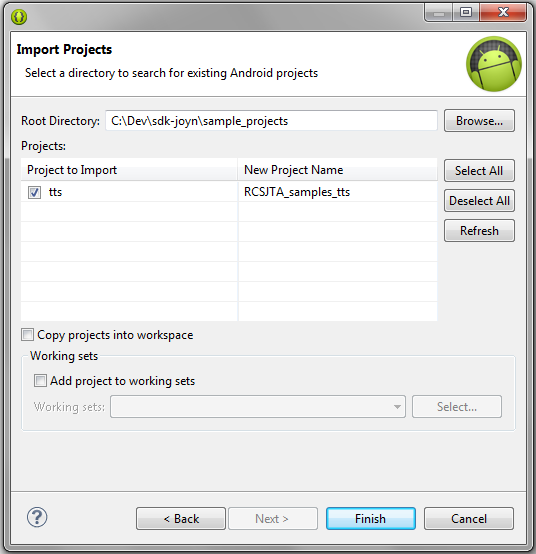

The required version for the Android SDK is at least 2.3 (Gingerbread).
There are two ways to install Eclipse, Android SDK and ADT.
Solution 1 :
Go to Android Developers website and download the latest version of the ADT bundle for windows. Unzip the bundle and launch Eclipse. Create a new workspace if needed.
That's it!
Solution 2 :
If you wish to download each component separately or you wish to add ADT plugin to a pre-installed version of Eclipse, follow these steps
You can donwload directly our SDK from here
You can also visit our Downloads page where you will find more information about the latest release and a link to the latest version.
Once you have download the ZIP file, all you need to do is Unzip the package to a directory of your choice.
If your device is not natively joyn, you must install the standalone joyn services and configure it.
You can get the standalone joyn service application from here.
There is also a dedicated guide explaining the installation and configuration of these services.
First open Eclipse IDE.
Open the file menu and click import.
Now click on Android, then select Existing Android Code Into Workspace. Click Next >.
Click on Browse..., navigate to the directory where you unziped the sdk and select the sample_projects folder.
A list of projects present in the folder should appear. You can select all the projects or just one if you wish.

Select Copy projects into workspace (If the projects are already present under your workspace directory, do not select).
Finally, click on Finish.
You will have to add the joyn-API JAR to the project's build path (if this is not already the case). You will find the JAR file in the lib folder of the SDK. Copy it to a new folder in your project and add to build path.
The easiest way to install and run an application on your terminal is to use Eclipse.
Connect your device via USB and make sure Android debug is activated.
In Eclipse, right-click on your project, go to Run As then Android Application.
A popup should appear with a list of available devices. Select the device you wish to install on and click Ok.
The application should automatically launch on your device.


 Have fun
Have fun